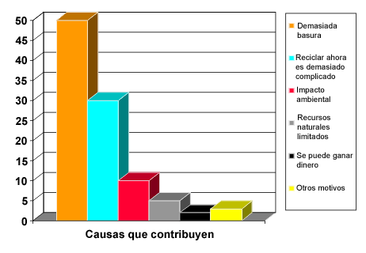

| Directriz: Diagramas de Pareto |
 |
|
Relaciones
| Elementos relacionados |
|---|
Descripción principal
|
Para complementar la Directriz: Diagrama de espina de pescado, puede utilizar los diagramas de Pareto. Se centran en mostrar el tamaño relativo entre los factores que contribuyen (motivos de raíz) en el problema. Asigne los factores de porcentaje a cada motivo de raíz. Dibuje el diagrama de Pareto y decida sobre el 20 por ciento superior de los motivos de raíz que contribuyen.  Ejemplo de diagrama de Pareto para el sistema de la máquina de reciclaje. |
© Copyright IBM Corp. 1987, 2006. Reservados todos los derechos. |